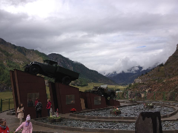

Sight seeing
Central Asia has much to offer to the Overland tourer. Whether it be driving through baron landscapes, winding through the beautiful mountains or visiting the old citys along the route of the silk road, The adventure opportunities are endless. Here are a few of our favourite places alog the way.
Turkemenistan
Turkmenistan's capital city, Asgabat, is a must see. It is known as the city of white marble and it is not difficult to tell why. As you drive through the city, you get to see the huge buildings and facades made out of white marble, you will also notice that all the cars are white too!
Further outside the confines of the cities, deeper into the baron landscape, you can find the Door to hell. It is only accessible via a sandy trail suitable only for 4x4 or Motorbikes. The door to hell was a natural gas field which collapsed into an underground cavern and became a natura gas crater, it is still burning to this day.
Uzbekistan
Uzbekistan is home to some of the famous cities of the Silk Road, it is an ancient trade route that was used for trading between the east and west. Some of the cities still contain the huge walls and the old architecture and you can still visit the bazaar's. Some of the cities we reccomend visiting are "Khiva", "Bukhara" and the famous "Samarkand". Explore each of the cities and learn about the history behind the Silk Road.
Kyrgyzstan
Kyrgyzstan is a beautiful country, We love spending our journeys climbing and traversing through the winding mountain roads. The mountains are home to some of the most beautiful valley passes and winding hairpin roads with views that can leave you speechless. As far as the eye can see, it is nothing but empty land, mountains and winding roads.
Kazakhstan
Kazakhstan is also home to beautiful mantainous landscapes along the route. Travel along the sides of the deep mountain valleys and look down below to the ice blue lakes. Lake Kaindy is a must see, it is a small lake which was created as a result of an earthquake. It also has the title of the underwater forest due to the spruce trees that stretch 30m below the water surface and give the appearance of an underwater forest. The Big Almaty Lake is another one to see, It's ice blue colour and surrounding of forestry and mountains creates views like no other.
Russia
The Altai mountains are our chosen route through Russia. Lovely sweeping mountain roads following the rivers that cut through the deep valleys. Stopping frequently along the way to take in the view is not uncommon along this route. Indulge in some of the historical stops along the way or keep an eye out for the teams of wild horses at the bottom of the valleys by the rivers.

Mongolia
Mongolia truly is an awe inspiring country for Overlanding. Roads dont really exist, this only adds to the adventure. Travel through the barron planes, surrounded by snow capped mountains. Huge birds of prey are a common sight flying above you, Wild horses and wild Camels are other regular sightings. You may even see some if the native Mongolians out tending to their animals by their Yurt (Native home). The natives are very friendly and you may even find yourself being invited into the home to indulge is some homemade alcoholic beverage called "Kumis", usually made from fermented milk. At night, you will have another spectacle overhead, The Milky Way. In plain sight, the Milky Way is visable spanning across the sky in the Gobi Desert, you wont see a night sky like this in many places!